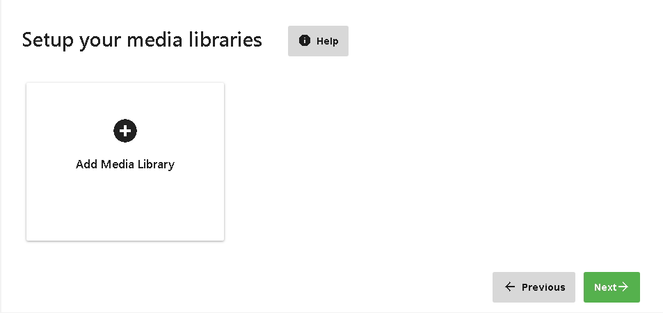
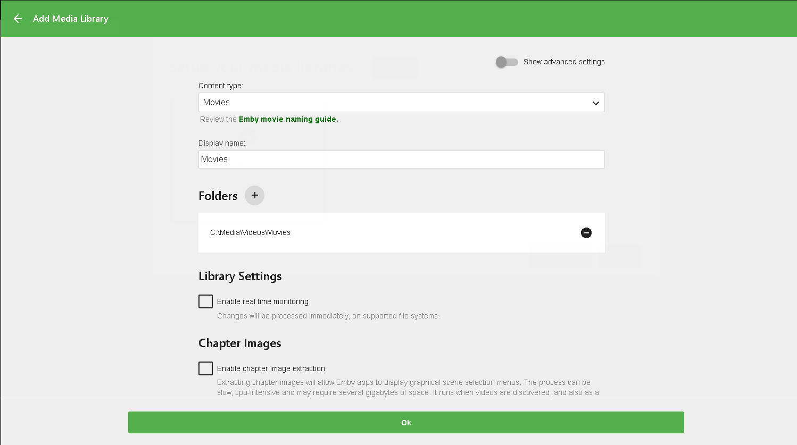
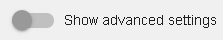

Bibliothekseinrichtung
Die Einrichtung der Bibliothek wird im Startassistenten sowie im Server Dashboard durchgeführt, das über die Registerkarte Bibliothek zugänglich ist.
Bereiten Sie Ihre Medien vor
Es ist wichtig, zuerst Ihre Medien vorzubereiten. Weitere Informationen finden Sie in anderen Abschnitten der Dokumentation:
Seite zur Bibliothekseinrichtung
Die Konfiguration zeigt die Medienbibliotheken an, die Sie konfiguriert haben und ermöglicht es Ihnen, diese hinzuzufügen, zu entfernen, umzubenennen oder die Pfade, denen sie zugeordnet sind, zu ändern.
Eine Medienbibliothek ist eine Gruppierung von einem oder mehreren physischen Ordnern in Ihrem Dateisystem.
Um zu beginnen, klicken Sie auf die Schaltfläche, um eine Medienbibliothek hinzuzufügen.

Durch Klicken auf die Schaltfläche "Medienbibliothek hinzufügen" wird ein Dialog zum Hinzufügen einer Bibliothek geöffnet. Sie müssen einen Inhaltstyp angeben, einen Anzeigenamen eingeben und einen Pfad zu den Medien auswählen.
Inhaltstyp
Die Wahl des richtigen Inhaltstyps ist wichtig. Siehe den obigen Leitfaden zur Medienvorbereitung für bewährte Vorgehensweisen in den Abschnitten Film, TV und Musik.
Verwenden Sie den Inhaltstyp "Unbestimmt", wenn Sie einen Medienordner hinzufügen möchten, der verschiedene Inhalte mischt. Bitte beachten Sie, dass die Unterstützung für gemischte Inhalte begrenzt ist. Anfangs können Sie beim Einrichten der Bibliothek nur einen Medienpfad hinzufügen, zusätzliche Pfade können jedoch nachträglich hinzugefügt werden.
Bibliothekspfade
Jeder Medienordner kann einen oder mehrere physische Bibliothekspfade haben. Wenn Sie mehr als einen Medienpfad angeben, werden die Inhalte jedes Pfades zu einer virtuellen Anzeige zusammengeführt.

Um einen Bibliothekspfad hinzuzufügen, klicken Sie auf die Plus-Schaltfläche. Ein Pop-up-Fenster wird angezeigt, das es Ihnen ermöglicht, in visueller Weise zum Speicherort zu navigieren.
Important
Wenn Sie eine der HTPC-Apps (Classic, Theater oder Kodi) verwenden möchten, ist es sehr wichtig, die Funktion Optionaler Netzwerkpfad zu nutzen, um die lokalen Pfade des Servers in Netzwerklaufwerke zu übersetzen, oder Ihre Medienstandorte mit Netzwerk-UNC-Pfaden zu definieren, die diese Maschinen sehen können.
Warning
Wenn Sie Pfade mit mehr als 256 Zeichen unter Windows haben, könnte es zu einem Problem kommen. Bitte wenden Sie sich an https://docs.microsoft.com/en-us/windows/win32/fileio/maximum-file-path-limitation für Unterstützung.
Tip
Auf einigen Netzwerken kann es vorkommen, dass der visuelle Browser keine Netzwerkgeräte anzeigt. In diesem Fall können Sie den Dialog dennoch abschließen, indem Sie den Pfad manuell eingeben und auf OK klicken.
Optionale Netzwerkpfade
Durch die direkte Zugriffsmöglichkeit von Emby-Apps auf Medienordner auf dem Server können diese möglicherweise direkt über das Netzwerk abgespielt werden und benötigen keine Serverressourcen für das Streaming und Transkodieren. Netzwerkpfade können dies ermöglichen, indem ein Pfad auf dem Server zu einem Netzwerkpfad zugeordnet wird, der von anderen Geräten zugänglich ist.
Um mehr zu erfahren, siehe Optionale Netzwerkpfade.
Echtzeitüberwachung aktivieren
Um zu überwachen, dass Emby Änderungen an Dateien und das Hinzufügen von Inhalten erfasst, sollte die Echtzeitüberwachung aktiviert werden.
Important
Diese Option ist nur auf unterstützten Dateisystemen verfügbar. Sie sollten Ihren Emby Server nach der Änderung dieser Option neu starten.
Untertitel
Falls gewünscht, können Sie die Untertitelsprache auswählen, die der Emby Server herunterladen soll.
Erweiterte Einstellungen
Wenn Sie Erweiterte Einstellungen aktivieren, werden zusätzliche Einstellungen pro Bibliothek angezeigt.

Erweiterte Einstellungen umfassen Optionen wie:
- Eingebettete Titel gegenüber Dateinamen bevorzugen
- Kapitelbilder während des Bibliothek-Scans extrahieren
- Open Subtitles Untertitel aktivieren